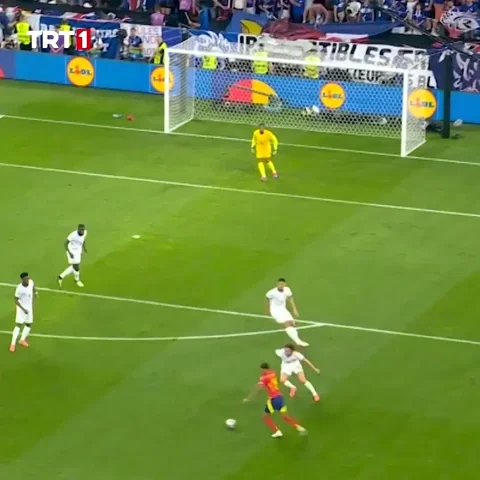
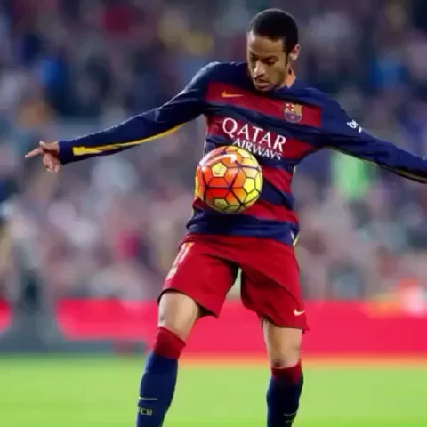
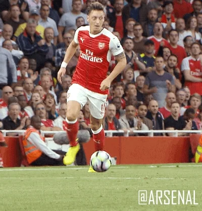
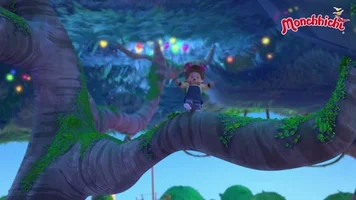

L’équilibre : Dans le football, l’équilibre est essentiel pour maîtriser le ballon, changer de direction rapidement et garder un bon contrôle sous pression. Les joueurs doivent savoir maintenir leur position tout en réagissant aux actions de l’adversaire, que ce soit en dribblant ou en effectuant une passe.
Le tir : Un tir au but requiert une bonne précision et puissance. Il existe différents types de tirs, comme le tir placé, le tir en force, et le tir en lob. La technique consiste à bien utiliser l'intérieur du pied, le coup de pied, ou le tir de volée selon la situation sur le terrain.
Le dribble : Le dribble est l'art de contrôler le ballon tout en avançant, en évitant les adversaires. Cela nécessite une grande maîtrise technique du ballon, ainsi qu'une rapidité d'exécution pour déstabiliser les défenseurs. Les joueurs doivent alterner entre vitesse et changements de direction pour déjouer l’opposant.
La passe : La passe est l'un des éléments les plus fondamentaux du football. Il existe différents types de passes : la passe courte, la passe longue, la passe en profondeur et la passe en retrait. Chaque type de passe a un objectif précis et peut être effectué avec l'intérieur, l'extérieur ou le coup de pied.
| Le tir | Tir en force, tir en finesse, tir de volée |  |
| Le dribble | Dribble simple, dribble de vitesse, dribble en changeant de direction |  |
| La passe | Passe courte, passe longue, passe en profondeur |  |
| L'équilibre | Maintien du corps pour éviter les fautes, contrôle du ballon en mouvement |  |